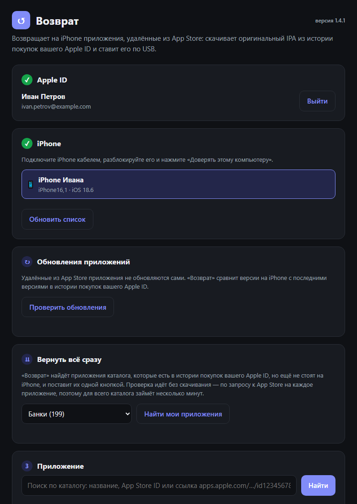
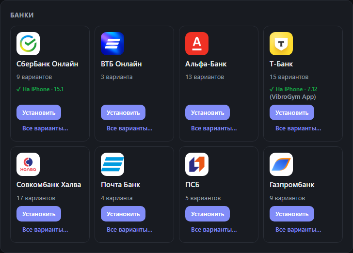
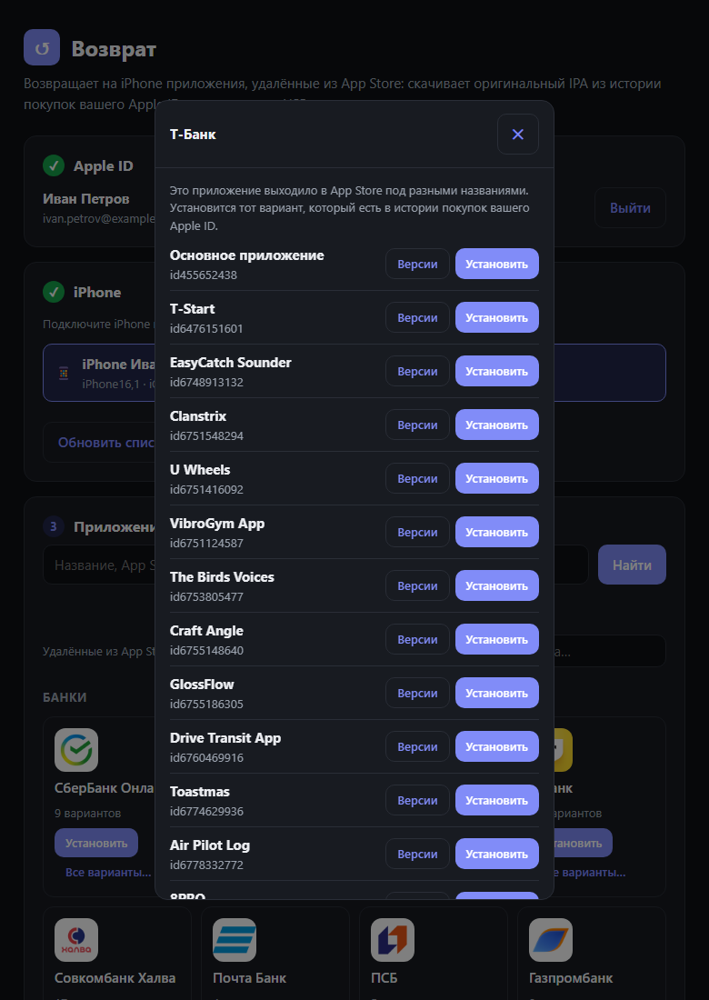
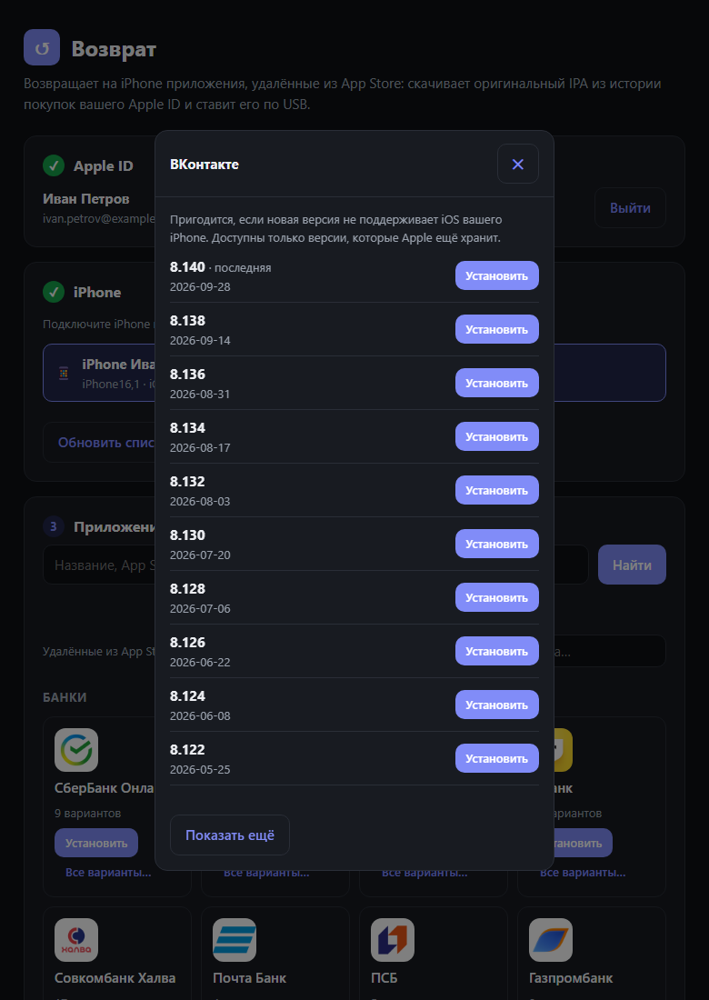
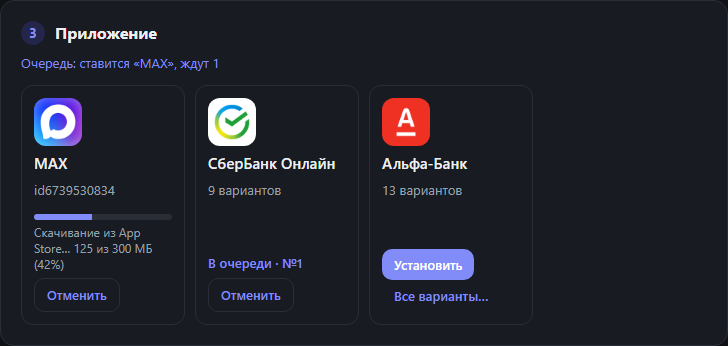
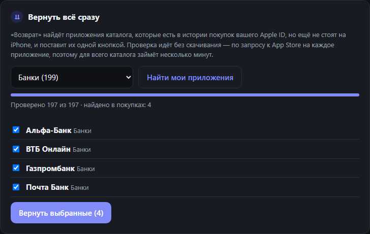
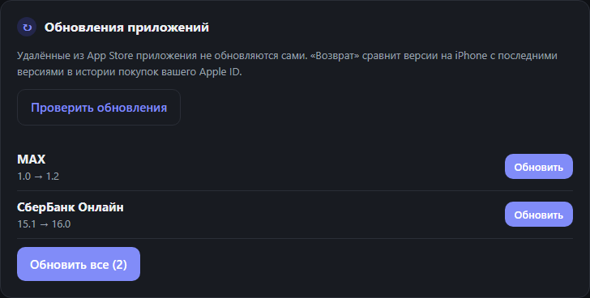
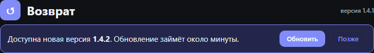

Подпись Apple
Как из App Store.
Приложение скачивается с оригинальной подписью Apple и привязано к вашему Apple ID. Никаких профилей разработчика и переподписи сертификатами — приложение не «протухает» через 7 дней.
∞срок работы
Возврат
Банки, VK, Авито и другие приложения, удалённые из российского App Store. Оригинальная подпись Apple. Без джейлбрейка.

Оригинальный IPA из истории покупок вашего Apple ID и установка по кабелю.
Приложение скачивается с оригинальной подписью Apple и привязано к вашему Apple ID. Никаких профилей разработчика и переподписи сертификатами — приложение не «протухает» через 7 дней.
Собраны в 215 карточек по категориям, с иконками и фильтром.
Последняя версия не работает на вашей iOS? Выберите более старую из тех, что хранит Apple.
Нажмите «Установить» у нескольких приложений: они встанут в очередь. Отменить можно и ожидающие, и идущую загрузку.
Перед установкой программа сверяет минимальную iOS и поддержку вашего iPhone.
Программа сама найдёт приложения каталога, которые есть в истории покупок вашего Apple ID, но ещё не стоят на iPhone, — и поставит выбранные одной кнопкой. Без скачивания лишнего: проверка идёт запросами к App Store.
В каталоге у приложений с iPhone отметка «✓ На iPhone» и установленная версия.
Вышла новая версия — программа предложит обновиться: скачает, проверит и установит её сама. Обычные обновления можно отложить, обязательные нужно поставить, чтобы продолжить.
Удалённые из App Store приложения сами не обновляются. «Возврат» сравнит версии на iPhone с последними в истории покупок и обновит их одним нажатием.
Программа работает на 127.0.0.1 вашего компьютера. Пароль уходит только на серверы Apple, а двухфакторная аутентификация поддерживается.
Проект с открытым исходным кодом для Windows, macOS и Linux. Любое приложение можно поставить по App Store ID или ссылке.
Скриншоты сделаны на демо-данных: аккаунт и iPhone вымышленные.

444 приложения по категориям. Что уже стоит на iPhone — видно сразу.

Банки выходили под разными названиями. Ставьте тот вариант, который вы когда-то скачивали, — в истории покупок есть только он.

Если последняя сборка требует более новую систему, поставьте более старую версию приложения.

Нажмите «Установить» у нескольких приложений сразу. Они поставятся по очереди, а прогресс виден прямо в карточке.

Выберите категорию — например, банки — и нажмите «Найти мои приложения». «Возврат» проверит, что есть в истории покупок, и покажет всё, чего ещё нет на iPhone.

Удалённые из App Store приложения не обновляются сами. Нажмите «Проверить обновления» — «Возврат» сравнит версии на iPhone с последними в истории покупок.

Когда выходит новая версия, «Возврат» сам предложит обновиться: скачает файл для вашей системы, проверит контрольную сумму, установит и откроется заново.
Четыре шага. Всё происходит на вашем компьютере.
Входите в аккаунт, с которого приложение когда-то скачивалось. Первый вход может занять 1–3 минуты.
Подключите кабель, разблокируйте телефон и нажмите «Доверять этому компьютеру».
Apple отдаёт оригинальный IPA с вашей подписью из истории покупок.
Программа ставит приложение на iPhone по USB. Готово.
Работает только для приложений, которые когда-то уже скачивались с вашего Apple ID.
Два принципиально разных способа поставить приложение, которого нет в App Store.
| Возврат | Установка IPA с переподписью (AltStore, Sideloadly и подобные) | |
|---|---|---|
| Откуда берётся IPA | Из истории покупок вашего Apple ID, напрямую с серверов Apple | Из сторонних источников |
| Подпись | Оригинальная, от Apple | Ваша, сертификатом разработчика |
| Срок работы | Без ограничений по времени | С бесплатным аккаунтом разработчика — 7 дней, затем нужна переподпись |
| Джейлбрейк | Не нужен | Не нужен |
| Выбор версии | Из версий, которые хранит Apple | Вручную, по найденным файлам |
| Что можно поставить | Только то, что уже скачивалось с вашего Apple ID | Любой доступный IPA |
| Стоимость и код | Бесплатно, открытый исходный код | Зависит от программы |
Сравнение описывает общие подходы, а не конкретные версии программ.
Готовые сборки. Python ставить не нужно: всё уже внутри.
64 бит. Нужен драйвер Apple: приложение Apple Devices или iTunes.
Драйвер встроен в систему. Выберите сборку под ваш Mac.
Ubuntu 22.04+ и аналоги. Нужна служба usbmuxd.
Дальше программа обновляется сама — кнопкой «Обновить», когда выйдет новая версия. Если у вас 1.2.1 или старше, установите новую версию отсюда один раз: в старых версиях автообновления ещё нет.
Если ссылка не открывает файл, возьмите нужную сборку на странице Releases.
VozvratSetup.exe. Права администратора не нужны.Окно программы работает на Microsoft Edge WebView2 — в Windows 10 и 11 он обычно уже есть. Если вместо программы появилось сообщение «Не удалось открыть окно программы», установите или обновите WebView2 Runtime.
.dmg и перетащите «Возврат» в «Программы».usbmuxd. Для Ubuntu и Debian:
sudo dnf install usbmuxd, в Arch: sudo pacman -S usbmuxd.Если AppImage не запускается из-за FUSE, распакуйте tar.gz и запустите Vozvrat/Vozvrat. На Linux интерфейс открывается во вкладке браузера.
Нет. Приложение скачивается с оригинальной подписью Apple и ставится по USB. Оно привязано к вашему Apple ID и не «протухает» через 7 дней.
Это значит, что приложение не скачивалось с этого Apple ID. Попробуйте другой вариант в «Все варианты…» или войдите под другим аккаунтом.
Откройте «Версии» и поставьте более старую версию приложения, которая поддерживает iOS вашего iPhone.
Windows: установите Apple Devices или iTunes. Linux: установите и запустите usbmuxd. Затем переподключите кабель, разблокируйте iPhone и нажмите «Доверять этому компьютеру».
Это проблема сети, а не Apple ID: перед входом «Возврат» обращается к серверу Apple, и тот не ответил. Программа сама повторяет вход несколько раз. Если не помогло — выключите VPN или прокси (а если их нет, попробуйте с VPN), отключите на время антивирус, подключитесь к другой сети или смените DNS на 1.1.1.1. Подробнее — в статье о частых ошибках.
Программа работает локально на вашем компьютере (127.0.0.1). Пароль передаётся только на серверы Apple через ipatool, двухфакторная аутентификация поддерживается. Исходный код открыт на GitHub.
Для части удалённых приложений Apple отключила пуши. Это ограничение Apple, а не программы.
Поиск идёт только по каталогу программы (444 приложения) и понимает транслит, разговорные названия и небольшие опечатки: «макс» и «max», «сбол», «тинькофф». Если приложения в каталоге нет, введите его App Store ID или ссылку apps.apple.com/…/id123456789.
В карточке «Вернуть всё сразу» выберите категорию «Банки» и нажмите «Найти мои приложения». «Возврат» проверит, какие банки есть в истории покупок вашего Apple ID и ещё не стоят на iPhone, — останется снять лишние галочки и нажать «Вернуть выбранные». Проверка идёт без скачивания: банки — около 5 минут, весь каталог — 10–15 минут.
Если часть приложений проверить не удалось, программа покажет причину и попробует их ещё раз. Приложения, которых нет в магазине страны вашего Apple ID, она отмечает отдельно — с таким аккаунтом их не скачать.
Это приложение уже стоит на подключённом iPhone; рядом — установленная версия, а если стоит не основной вариант — его название. Отметки обновляются при подключении телефона и после каждой установки.
Через App Store удалённые приложения не обновляются. Подключите iPhone и нажмите «Проверить обновления» в «Возврате»: программа покажет, для каких приложений в истории покупок есть версия новее, и обновит их по одному или все сразу. Данные приложений сохраняются.
Ничего делать не нужно: когда выходит новая версия, программа предлагает обновиться и ставит обновление сама. Обычное обновление можно отложить кнопкой «Позже», обязательное — с важными исправлениями — нужно поставить, чтобы продолжить. Если у вас 1.2.1 или старше, один раз установите новую версию со страницы загрузки — автообновление появилось в 1.3.0.
При запуске программа проверяет обновления на GitHub — в том числе обязательные, без которых старой версией пользоваться нельзя. Если проверить не удалось, появится сообщение с кнопкой «Повторить» — проверьте подключение к интернету. Без интернета программа всё равно не смогла бы скачать приложение у Apple.
В поддержку в Telegram — @vzvrt_app. Приложите текст ошибки, версию «Возврата» (она видна рядом с названием в окне программы), систему компьютера и модель iPhone с версией iOS. Ошибку в программе можно описать и в Issues на GitHub.
Да, кнопкой «Отменить» в карточке приложения — и пока оно ждёт в очереди, и во время скачивания. Установку на iPhone прервать нельзя: оборванная установка может оставить приложение в неработающем состоянии.